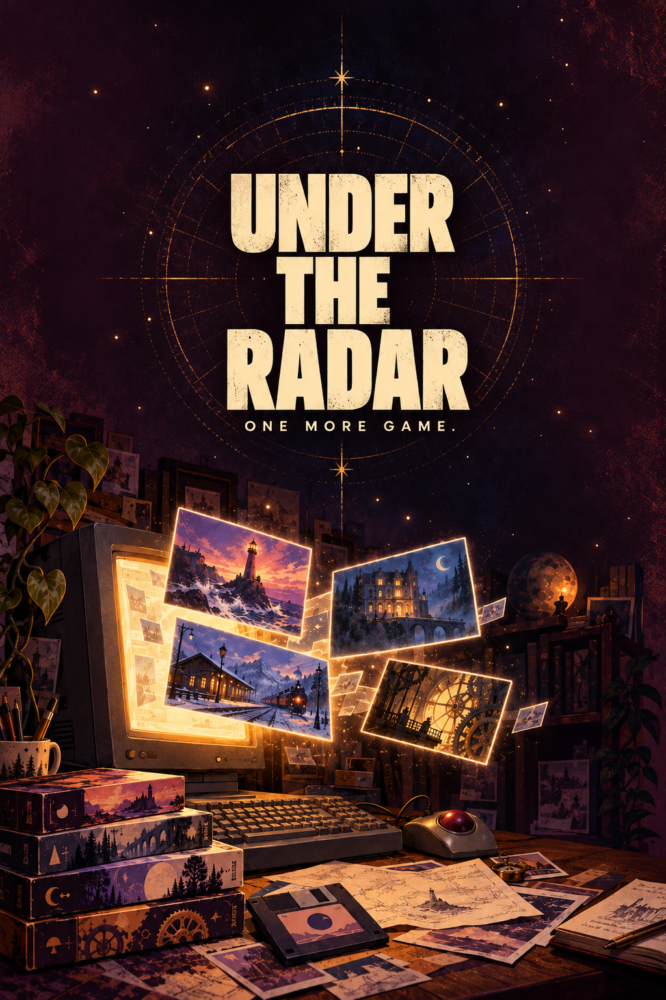

← Back to the shelfSomething is out there.

A little off the beaten path.
In development Details under wraps
Under the Radar
Your next favourite is one you’ve never heard of.
Follow your curiosity into a world of quiet surprises and unexpected connections. Take your time, trust your instincts, and see where a little wandering leads.
Some things are worth a closer look.
Just one more.
Follow the discoveries
A little mystery, for now.